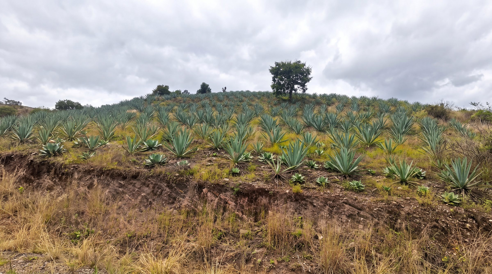
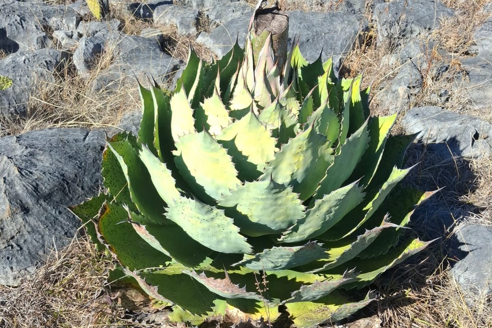
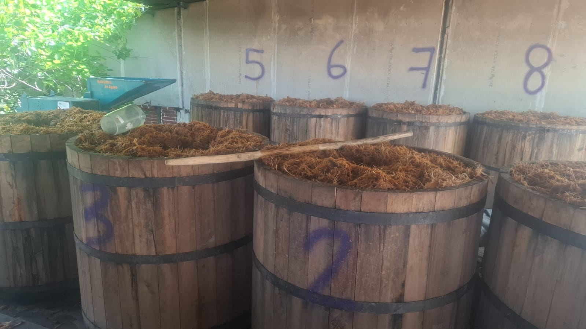

Villa Sola de VegaOaxaca · 2026
- 01
- 02
- 03
- 04
- 05
- 06
- 07
- 08





| 2026 | ||
|---|---|---|
- Ordres de grandeur par litre : International Journal of Life Cycle Assessment, 2023, et WLRN, mars 2026.
- Repère des cinq pour cent de plantes laissées en fleur : programme Bat Friendly de Rodrigo Medellín.
- Biologie du tobalá et pression de cueillette : Journal of Ethnobiology and Ethnomedicine. Le mezcal à Villa Sola de Vega : Tropical and Subtropical Agroecosystems.
- Órdenes de magnitud por litro: International Journal of Life Cycle Assessment, 2023, y WLRN, marzo de 2026.
- Referencia del cinco por ciento de plantas que se dejan florear: programa Bat Friendly de Rodrigo Medellín.
- Biología del tobalá y presión de corte: Journal of Ethnobiology and Ethnomedicine. El mezcal en Villa Sola de Vega: Tropical and Subtropical Agroecosystems.
- Orders of magnitude per litre: International Journal of Life Cycle Assessment, 2023, and WLRN, March 2026.
- Benchmark of five per cent of plants left to flower: Rodrigo Medellín's Bat Friendly programme.
- Biology of the tobalá and harvesting pressure: Journal of Ethnobiology and Ethnomedicine. Mezcal in Villa Sola de Vega: Tropical and Subtropical Agroecosystems.